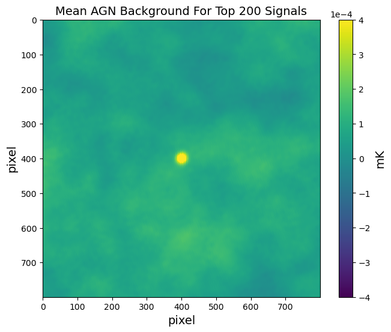

Research
Drop Pinch-off Dynamics

If you are ever out in the rain you may notice that water has this tendency of forming drops. The water from the rain itself comes in drops, and so does the water that falls from the leaves of a tree or the water that drips from the rooftop. This type of behavior, as a matter of fact, is not limited to water and occurs with all kinds of fluids. But why? Why does a falling stream of liquid break up into droplets and what does it look like?
The video above is an example of a pinch-off process for pure water falling through a circular nozzle. I recorded this event with a high speed camera at 5899.71 fps, so everything in the video above took place within 50 ms. My first time seeing this I was completely delighted. It is incredible that a phenomenon like this takes place around us all the time in our day to day life without being noticed. But what is the physics behind all that? Well, we have gravity trying to accelerate the fluid down, surface tension doing its best to keep the fluid together and minimize its surface area, and viscosity resisting any deformation to the fluid. And it is this tendency of surface tension to minimize the surface area of the fluid while conserving its volume that eventually leads to the pinch-off.

In order to investigate the evolution of the drop with time, I used ImageJ to measure the minimum neck radius of the drop at different times from pinch-off. The result is shown in the log-log plot above. As it turns out, the minimum neck radius of the drop follows a power law with time. The fit is not perfect though, and that is because there is one power law in the earlier stage of the drop formation when surface tension dominates, and another power law in the later stages when viscosity dominates and the drop is about to pinch-off.

What is most remarkable about the drop pinch-off dynamics is how repeatable it is. I compared the whole process frame-by-frame for six different drops and they look indistinguishable. The picture above shows one of my favorite patterns for six different drops of pure water. All of them were taken exactly 36 frames, or 6.1 ms, from the pinch-off.
This experiment was conducted by me as part of a year-long Experimental Physics course offered by The University of Chicago. All equipment used for this experiment belongs to the Physics Department.
Mass of the Neutron
The mass of charged fundamental particles, such as protons and electrons, can be measured by sending them through a magnetic field and determining the radius of curvature of their path (this technique is known as mass spectrometry). But what if you want to measure the mass of the neutron? They are neutral particles and so they don't experience a Lorentz force. If you were to send neutrons through a magnetic field their paths wouldn't be affected at all, so mass spectrometry doesn't work for them. What do we do when things don't go our way? We smash them! In this case we smash neutrons and protons to produce deuteron: \[ \text{n} + \text{p} \rightarrow \text{d} + \gamma \] Deuteron is a bound nucleus with one proton, one neutron, and a net charge of +1. Its mass can therefore be obtained through mass spectrometry. The idea of this experiment is then to measure the energy of the photon in the reaction above to obtain the mass of the neutron by conservation of energy. Our detection system consisted of a single NaI+PMT connected to a pulse-height analyzer, and our source of neutrons was a neutron howitzer.

By intelligently choosing what materials to shield the detector with, we were able to isolate the capture gamma peak, which we measured to be centered at \( E_\gamma = (2.11\pm 0.06)\ \text{MeV} \). From this result, we can use conservation of energy to obtain the rest mass of the neutron: \(m_n = (939.45 \pm 0.06)\ \text{MeV}\).
This experiment was conducted by me as part of a year-long Experimental Physics course offered by The University of Chicago. All equipment used for this experiment belongs to the Physics Department.
Exploring Active Galactic Nuclei Feedback with Survey Science
How does the AGN feedback effect change the shape of the total matter distribution in galaxies and galaxy clusters? So far, this has been studied using hydrodynamical simulations. However, all the hydrodynamical simulations tend to disagree with each other and none of them agree well with data, so we want to investigate this directly using data.
To understand the impact of this AGN feedback effect, we must first understand where they are located. One question we have is how often do we find AGNs in a cluster or galaxy sample that we are interested in? The problem here is that galaxy cluster catalogs are usually generated avoiding the locations of AGNs so we need to look at optical galaxy samples. The goal is then to determine what the probability is in finding AGNs in such environments.
One of the ways I analyzed the distribution of AGNs in relation to optical clusters was through angular correlation functions, which is a convenient method to quantify the clustering of points in the sky. Positive values of the correlation function indicate clustering of points at that scale, and negative values indicate avoidance. The figure above shows the angular correlation function between redMaPPer galaxy clusters and AT20G AGNs. The variance was estimated using jackknife resampling.
I acknowledge the use of the following data catalogs: redMaPPer Y1A1, AT20G, SPT-SZ 2500d, and Planck 143GHz